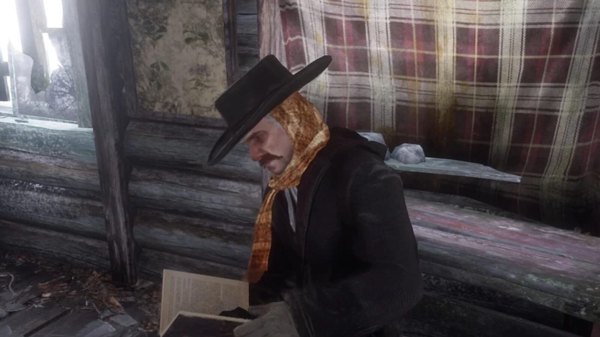
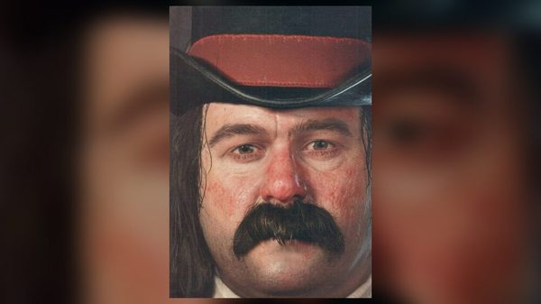
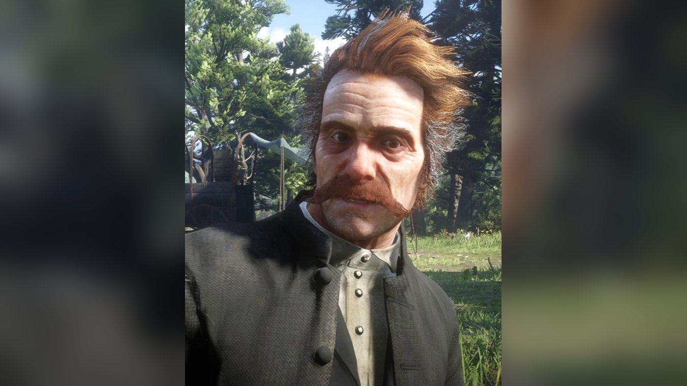
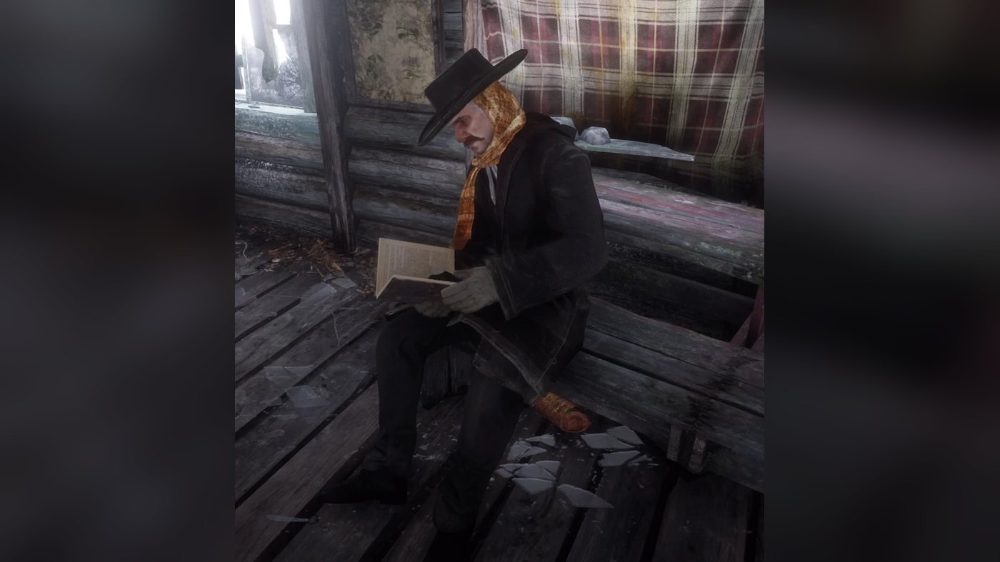

Character · Van der Linde gang
Orville Swanson
Reverend Orville Swanson is a supporting character of Red Dead Redemption 2 (2018), set in 1899. He is a former clergyman who travels with the Van der Linde gang and is addicted to alcohol and morphine. He speaks the game's first line, in the snowstorm that opens the story. During the Horseshoe Overlook chapter, Arthur Morgan finds him drunk at Flatneck Station and saves him from a train in "Who is Not Without Sin". At Shady Belle, Dutch has him bury Kieran Duffy with Charles Smith and Simon Pearson. He is sober by the time Arthur returns from Guarma, and he leaves the gang at Beaver Hollow before its collapse. A 1907 in-game newspaper article reports that he has become minister of the First Congregational Church of New York.
He is played by Sean Haberle, an American actor.
- Name
- Orville Swanson
- Also known as
- Reverend Swanson
- Born
- Not given in the game
- Status
- Alive in 1907
- Nationality
- American according to the Red Dead Wiki
- Affiliation
- Van der Linde gang (until 1899); First Congregational Church of New York (1907)
- Role
- Former clergyman; minister in New York by 1907
- Games
- Red Dead Redemption 2
- Voiced by
- Sean Haberle (voice and motion capture)
Biography
Origins
The games give no date or place of birth for Orville Swanson. The Red Dead Wiki lists him as an American. Before he joined the Van der Linde gang he was a clergyman, a calling he lost along with his faith and his family. He once saved the life of Dutch van der Linde (see Personality).
The rest of his past comes from his own account, given to Hosea Matthews at the campfire at Horseshoe Overlook. Swanson married a woman who, as it turned out, already had a husband, which made him a bigamist without his knowing it. The police found the two of them in San Francisco. She sailed for Shanghai, and that was the last he saw of her. He tells Hosea that he supposes he is in some way still married.
Red Dead Redemption 2 (1899)
Chapter 1: Colter
The game opens in "Outlaws from the West", with the gang's wagons crossing the Grizzlies in a snowstorm after the failed ferry robbery in Blackwater. Swanson climbs down from a wagon and walks up to Dutch. He tells him that Abigail thinks Davey Callander, wounded in Blackwater, is dying, and that they will have to stop somewhere. Dutch answers that he has sent Arthur Morgan ahead to look for shelter. The gang takes refuge in the abandoned mining town of Colter. There, Abigail announces that Davey is dead, and Swanson tells her she could not have done anything more for him.
While the armed men go out on jobs, Swanson remains behind at Colter, along with Uncle, Pearson, Strauss, Jack and the women (his camp scenes there are in Relationships). At the start of "Who the Hell is Leviticus Cornwall?", he is sitting at the bedside of John Marston, who was mauled by wolves in the mountains. Arthur, already in the cabin, jokes that he had expected Swanson to be reading John his last rites, but sees him sharing his "other passion" instead. Swanson stands, demands a little respect and leaves the cabin.
When the snow melts, the gang leaves the mountains in "Eastward Bound". As Hosea proposes Horseshoe Overlook, near Valentine, as the next camp, Swanson is loading supplies into a wagon with Bill Williamson. At the new camp, Dutch gathers everyone, tells them it is time to earn money and singles out Uncle and Swanson: the gang will carry no more passengers. Some of the others laugh.
Chapter 2: Horseshoe Overlook
A couple of weeks later, Hosea tells Arthur that Swanson has found something at the train station by the lake. In "Who is Not Without Sin", Arthur rides to Flatneck Station, in the Heartlands, and finds Swanson very drunk at a poker table with two men, Luther and Marvin. Swanson greets him by announcing that he has followed Arthur's advice and broken free of morphine. Arthur answers that he looks drunk rather than free. Luther insists that the reverend finish the game. Swanson calls the two players good men and children of God, then collapses on the floor.
Luther then suggests that Arthur play in Swanson's place. If he accepts, he plays up to five hands, and when Marvin mocks the reverend, Arthur tells him that Swanson is a decent man going through a bad time and warns him not to do it again. Whether he plays or not, Swanson crawls out of the building in the meantime. Arthur searches for him around the station and asks passers-by, who point him west. He finds Swanson in a fight with a stranger, who pushes the reverend away and turns on Arthur. Arthur can knock the man out or kill him; according to the mission page, killing him costs no honor. Arthur then runs down a shepherd who saw the fight and threatens him into keeping quiet.
Swanson has meanwhile wandered onto Bard's Crossing, the railway bridge over the Dakota River, and caught his foot in the track. Arthur climbs up to him, frees the foot as a train arrives, and the two get clear of the rails just in time. When Swanson thanks him, Arthur shoves him to the ground. Swanson protests at being thrown off a bridge, Arthur shouts that there was a train, and the reverend breaks down: he apologizes and says he wishes he were different. As Arthur offers to take him home, Swanson says he could have tea with Margaret, then passes out before he can say who she is.
Arthur carries him back to Horseshoe Overlook on his horse while Swanson mumbles about cards, kippers, tea and Margaret. If Arthur greets the others as he carries him through camp, most of them comment on the reverend's state (see Relationships). Arthur drops Swanson on his bed and leaves him in the care of Susan Grimshaw.
At the end of the chapter, after "A Strange Kindness", the gang leaves Horseshoe Overlook for Clemens Point, on Flat Iron Lake in Lemoyne, and Swanson moves with it.
Chapter 3: Clemens Point
In "Blessed are the Peacemakers", Arthur is captured and tortured by the O'Driscoll Boys during a parley between Dutch and Colm O'Driscoll. He escapes and rides back to Clemens Point, where he collapses. Dutch calls for help from Miss Grimshaw, then for Swanson, who tells the wounded man that he is safe now. Arthur is put to bed, and Dutch asks Susan to sit with him. Several weeks pass before the closing scene, in which Swanson visits the recovering Arthur. He admits that he thought he would be burying him; Arthur replies that it is not time yet. The two wish each other well.
The Red Dead Wiki also lists Swanson in the two missions that end the chapter, although their mission pages do not name him. In "Blood Feuds, Ancient and Modern", Dutch and seven of his men ride to Braithwaite Manor in search of the kidnapped Jack, while the rest of the gang waits at Clemens Point. The next morning, in "The Battle of Shady Belle", the Pinkerton agents Andrew Milton and Edgar Ross walk into the camp. Milton offers the others three days to disappear, on condition that Dutch surrenders; the gang refuses. Arthur and John clear the abandoned Shady Belle plantation house of Lemoyne Raiders, and the gang moves into it.
Chapter 4: Saint Denis
At Shady Belle, Swanson is the one who first tells Arthur about Brother Dorkins, a monk in Saint Denis who leads to the stranger mission "Help a Brother Out" (see Relationships).
In "Horsemen, Apocalypses", the O'Driscolls send Kieran Duffy into the camp dead on a horse, beheaded and with his eyes gouged out, then attack Shady Belle. The members who do not fight take shelter inside the house; according to the mission page, Swanson hides in Hosea's room. Once the attackers are driven off, Dutch has Charles Smith, Swanson and Pearson bury Kieran while Arthur and John clear away the bodies.
Chapter 5: Guarma
After the failed Saint Denis bank robbery at the end of chapter 4, in "Banking, The Old American Art", Dutch, Arthur, Micah Bell, Bill and Javier Escuella end up on the island of Guarma. The rest of the gang leaves Shady Belle for Lakay, an abandoned settlement in the bayou northwest of Saint Denis. In "Fleeting Joy", Arthur reaches Lakay and finds the others there. According to the Red Dead Wiki, Swanson has overcome his addictions by then. The reunion is cut short by a Pinkerton attack on the village. In "That's Murfree Country", Arthur and Charles find a new hideout at Beaver Hollow, in Roanoke Ridge, and the gang moves there, Swanson included.
Chapter 6: Beaver Hollow
His talks with Arthur and Strauss at Beaver Hollow are told in Relationships. At the start of "A Rage Unleashed", Arthur is talking with him in camp when Dutch calls Arthur over and tells him that the gang will head north to New York before going to the tropics. The arrival of Eagle Flies, whose tribe's horses have been seized by the army, then sends Arthur, Dutch and Charles away from camp.
In "The Fine Art of Conversation", Arthur and Charles help Captain Lyndon Monroe escape the army to Emerald Station. After Monroe has left on a train, Arthur has a coughing fit on the platform. If he has completed the stranger mission "Of Men and Angels" and has high honor, he meets Sister Calderón there. Otherwise he meets Swanson, who is leaving the gang. According to the Red Dead Wiki, Swanson brings up Dutch's erratic behavior and says he will not die for his nonsense. He tried to persuade the women and Jack to leave with him, but they refused.
What follows depends on Arthur's honor. With high honor, Swanson tells Arthur to save who he can, let the rest rot and look after himself. With low honor, he tells Arthur that he lived his way and will die his way. Swanson then boards the train. He does not appear again in 1899: after this mission, Swanson and Josiah Trelawny are no longer in the Beaver Hollow camp, and if Arthur meets Sister Calderón instead, Swanson's departure is not shown. With high honor, Arthur recalls Swanson's advice during his last ride in "Red Dead Redemption", at the end of the chapter.
Epilogue (1907)
Epilogue 2: Beecher's Hope
Swanson does not appear in the epilogue. What became of him is told by others. According to the Red Dead Wiki, after John and Uncle find Charles in Saint Denis in "Bare Knuckle Friendships", Charles tells John that Swanson has moved to New York to become a preacher. An in-game newspaper article titled "Reverend Swanson Leads NY Church", printed in the Blackwater Ledger (No. 74), the New Hanover Gazette (No. 39) and the Saint Denis Times (No. 55), reports that he has been installed as minister of the First Congregational Church of New York, having moved to the city to take the post.
According to the article, a service and then a reception were held for his appointment. People who attended described his sermon, on acknowledging sin and seeking redemption, as "impassioned and heartfelt". In it he spoke of the period when he broke with his faith, could not attend church and fell into depravity. He then described how he found his faith again and began preaching on street corners, before becoming assistant pastor of a church in Ohio. At a recent convention of First Congregational Churches, his speech impressed those present, and he was offered the New York post almost at once.
Personality
Rockstar Games' official description of Swanson, posted on September 6, 2018 (see Marketing), reads: "An ex clergyman now lost to debauchery, Swanson has fallen a long way from the standards he once set himself. If he hadn't saved Dutch's life in the past, it's unlikely the gang would have kept him around for this long." Neither the games nor Rockstar say how he saved Dutch.
A character page from an official guide, reproduced on the Red Dead Wiki, opens with almost the same words and adds that he "struggles with many demons". It gives the origin of his addiction: "He started using morphine to ease some back pain a few years ago and it quickly took a desperate hold on him." The guide calls him "A beaten man who has lost his self-esteem, direction and most of his religion", and notes that "his failings are made all the worse as he is very much aware of them."
He drinks and takes morphine. The book he carries as a Bible is a painted box: once "Who is Not Without Sin" is done, Arthur can open it in camp and find a syringe, a tourniquet and a bottle of morphine, according to the Red Dead Wiki. At the campfire he says he only drinks when he feels weak and full of doubt, and that he is strong when he does not drink. In another campfire scene he tells the others that he has made a fool of himself again and that one of them saved him, without knowing who. He pities himself for all the morphine he takes and says that Dutch should have put a bullet in his head instead of taking him in.
The game never names his church. The Red Dead Wiki describes him as a Protestant, a reading it bases on the King James Bible he reads from in camp (see Karen Jones). According to the Red Dead Wiki, Swanson, Pearson and Molly O'Shea are the only gang members the game never shows involved in a crime. The one exception it notes for Swanson is an attempt to rob a toll box.
In his own words
The Red Dead Wiki opens its page on him with a line from the game in which he sums up his fall: "Now I had real suffering and I lost everything, my vocation, my faith, my family..." In a long speech by the campfire, he starts from the gift of fire, turns to Prometheus and the punishment that came with knowledge, and ends: "Quite the conundrum, fire. It's enough to make a man drink... or worse."
Names
Rockstar's description and the guide page call him Reverend Swanson, and so do Dutch and most of the gang. Arthur addresses him as "Reverend" or by his surname. His first name, Orville, appears in the 1907 newspaper article about his New York church, which calls him "Reverend Orville Swanson". The French wiki calls him Orville Swanson, known as Révérend Swanson. He is given no nickname.
Appearance
The guide's portrait shows a man with red hair turning grey and a large reddish handlebar mustache, in a wide-brimmed black hat, a long dark frock coat and a white neckcloth, a bottle in his hand. According to the Red Dead Wiki, he often goes without his hat and coat from chapter 3 to chapter 6.
Relationships

Arthur Morgan
Arthur brings him back from Flatneck Station and pulls him off a railway bridge in "Who is Not Without Sin" (see Biography). At Horseshoe Overlook Swanson thanks him for the rescue and comes to him with his fears that the gang is doomed. According to the Red Dead Wiki, he asks Arthur at one point whether the Pinkertons will finally kill them; Arthur answers that they probably will. Drunk, he once calls Arthur over as if he had something important to say, then only says hello and admits he has forgotten the rest.
At Shady Belle he tells Arthur he has wanted to say something for days, cannot remember what, and blames his curse; when Arthur tells him to stop, he answers that he cannot. When Arthur collapses in camp after escaping Colm O'Driscoll, Dutch calls for Swanson, who visits Arthur again weeks later (see Biography). According to the Red Dead Wiki, a sober Swanson later tells Arthur that he prayed with a Catholic lady and that his curse has been lifted, and Arthur answers that he himself is sick. The wiki also gives Arthur's comment on Swanson's recovery: at least something good has come out of their situation. Arthur may see him one last time at Emerald Station, as Swanson leaves the gang (see Biography).

Dutch van der Linde
Dutch owes Swanson his life (see Personality). When Arthur carries him back drunk in "Who is Not Without Sin", Dutch thanks Arthur and tells him to put the fool in his tent to sleep it off.

Hosea Matthews
At the campfire Swanson tells Hosea about his marriage (see Biography). Hosea tells him he stayed drunk for a year after the death of his own wife, Bessie. By the stew pot, Swanson says he does not like Catholics but respects confession, and asks to confess to Hosea; Hosea answers that this is between him and God, and agrees when Swanson says God would have struck him down long ago if he cared. When Hosea coughs at the campfire, Swanson or Lenny pats him on the back. Seeing him carried back from Flatneck Station, Hosea jokes that he has been out working hard again.

Susan Grimshaw
Susan takes charge of him when Arthur brings him back drunk in "Who is Not Without Sin": she pities him, thanks Arthur and says she will keep an eye on him.

Micah Bell
Micah bullies him repeatedly, mocking his faith and his addictions. He tells Swanson that men of the cloth are parasites, and names him, with Molly O'Shea, among the members who contribute nothing and should be cut loose. In some of these scenes Susan Grimshaw steps in and orders Micah to leave the reverend alone. Arthur confronts Micah over the way he treats Swanson.

Leopold Strauss
At Horseshoe Overlook Swanson comes to beg Strauss for money; Strauss refuses before he can ask, reminds him that he already owes a lot, and asks how a man who says he is dying plans to pay him back. Swanson leaves, calling him heartless. According to the Red Dead Wiki, at Beaver Hollow a worried Strauss talks with a now sober Swanson, who speaks hopefully of his own recovery, and Strauss decides he has lost his mind. The wiki adds that Swanson approves when Arthur throws Strauss out of the gang.

Javier Escuella
At Horseshoe Overlook Swanson finds Javier praying behind a barrel and tells him "it's not too late to repent, my Mexican friend". Javier, a Catholic, answers that plenty of priests would gladly hear Swanson's own confession, and crosses himself. Swanson declares him doomed and laughs; if Arthur is there, he answers that they are all doomed, and Javier gives him a thumbs-up before returning to his prayer. When Arthur carries the drunk reverend into camp in "Who is Not Without Sin", Javier's only comment is "Not again."

Bill Williamson
Bill and Swanson load a wagon together before the gang leaves Colter (see Biography). Over a meal, Bill wonders why the reverend stays, and Swanson says he has little say in the matter. When Arthur carries Swanson to bed in "Who is Not Without Sin", Bill remarks that Arthur never carried him home.

Uncle
Swanson wakes Uncle up and accuses him of badmouthing him. Uncle drops his trousers in answer, and Swanson leaves, disgusted. The scene can play from Horseshoe Overlook to Shady Belle.

John Marston
Swanson sits at John's bedside at Colter after the wolf attack (see Biography). When Arthur brings the drunk reverend home in "Who is Not Without Sin", John tells Arthur he is too easy on him.

Abigail Marston
Swanson passes on Abigail's warning about Davey Callander to Dutch, then consoles her when she announces at Colter that Davey has died (see Biography). When Arthur carries Swanson home drunk, Abigail tells Arthur he has always had a soft spot for the old man.

Jack Marston
Seeing Arthur carry the reverend in, Jack asks whether Swanson is asleep. Jack is among those Swanson asks to leave with him in chapter 6 (see Biography).

Charles Smith
In "Who is Not Without Sin" Charles asks Arthur what the reverend has done this time. In 1907 he is the one who gives John news of Swanson, according to the Red Dead Wiki.

Simon Pearson
When Arthur carries the drunk reverend through camp, Pearson remarks that somebody had a good time.

Kieran Duffy
Kieran asks whether that is the reverend when Arthur carries Swanson back to camp. Swanson is one of the three men who later bury him (see Biography).

Karen Jones
At Colter Swanson reads Isaiah 40:20-31 aloud from the King James Bible, by the benches. Karen asks him what the passage means; he admits he does not know, only that the passage comforts him. In "Who is Not Without Sin" she says he needs to learn to hold his liquor.

Tilly Jackson
At Shady Belle, according to the Red Dead Wiki, Swanson cries out from the gazebo that he has seen the ghost of a young woman in the swamp, and Tilly tells him he is losing his mind. She asks whether he is all right when Arthur brings him back drunk.

Molly O'Shea
When Arthur arrives with the drunk reverend, Molly says she was wondering when he would turn up.

Sean MacGuire
Back in camp after his rescue, Sean greets the sight of the drunk reverend by saying he missed him.

Mary-Beth Gaskill
Mary-Beth sighs over the reverend when Arthur carries him back to camp in "Who is Not Without Sin".

Sadie Adler
Seeing Arthur carry the drunk reverend, Sadie says she won't even ask.
Davey Callander
A gang member wounded in Blackwater. Swanson's first line is about him (see Abigail Marston).
Brother Dorkins
A monk Swanson met in Saint Denis. At Shady Belle, if Arthur has not yet started "Help a Brother Out", Swanson comes up to him. When Arthur says he looks well, Swanson replies that he always does at first, before he makes a fool of himself again. He then says the monk took him back to his early days in college and spoke of bad things happening in the city, and he suggests Arthur go and talk to him. This is how Arthur first hears of Dorkins. According to the Red Dead Wiki, Swanson calls Dorkins a fine man in spite of his being a Catholic.
Sister Calderón
Arthur meets her or Swanson at Emerald Station, depending on his honor and on "Of Men and Angels" (see Biography).
Skills, weapons and horses
Role in camp
The Red Dead Wiki lists no weapon for Swanson. He does not ride out on jobs with the armed men (see Biography). At Horseshoe Overlook his camp scenes only begin after "Who is Not Without Sin", according to the wiki's camp events page. At the party for Jack's return, at Shady Belle, he turns down Arthur's invitation to join in, saying he would only ruin it.
Missions
The English Red Dead Wiki lists fourteen missions of Red Dead Redemption 2 for Swanson, two of which he gives himself, and in the last of them only his voice is heard. The French Red Dead Wiki lists the same missions except the last. The table below also includes the missions in which he is only talked about.
Red Dead Redemption 2, story missions
| Mission | Chapter | Swanson's role |
|---|---|---|
| Outlaws from the West | 1. Colter | In the snowstorm, he tells Dutch that Davey Callander is dying. At Colter, he comforts Abigail after Davey's death. |
| Who the Hell is Leviticus Cornwall? | 1. Colter | At the bedside of the wounded John when Arthur speaks to him in the cabin; he leaves after Arthur's joke. |
| Eastward Bound | 1. Colter | Loads a wagon with Bill before the departure. At Horseshoe Overlook, Dutch tells him and Uncle that the gang will carry no more passengers. |
| Who is Not Without Sin | 2. Horseshoe Overlook | Mission giver. Drunk at Flatneck Station, he wanders off, is beaten by a stranger and gets his foot stuck on the railway bridge at Bard's Crossing; Arthur saves him from a train and brings him back to camp. Gold Medal: win two hands of poker and bring him back within 2 minutes 5 seconds. The mission fails if he is assaulted, killed or abandoned. |
| A Strange Kindness | 2. Horseshoe Overlook | Listed by the Red Dead Wiki; the mission page does not name him. The gang moves to Clemens Point at the end. |
| Blessed are the Peacemakers | 3. Clemens Point | Called by Dutch when Arthur returns wounded; weeks later, he visits Arthur during his recovery. |
| Blood Feuds, Ancient and Modern | 3. Clemens Point | Listed by the Red Dead Wiki; the mission page does not name him. |
| The Battle of Shady Belle | 3. Clemens Point | Listed by the Red Dead Wiki; the mission page does not name him. Milton and Ross come to Clemens Point, then the gang moves to Shady Belle. |
| Horsemen, Apocalypses | 4. Saint Denis | Hides in Hosea's room during the O'Driscoll attack on Shady Belle, then buries Kieran with Charles and Pearson on Dutch's orders. |
| Fleeting Joy | 5. Guarma | Listed by the Red Dead Wiki; the mission page does not name him. According to the wiki, he is sober when Arthur reaches Lakay. |
| That's Murfree Country | 5. Guarma | Listed by the Red Dead Wiki; the mission page does not name him. The gang moves to Beaver Hollow. |
| A Rage Unleashed | 6. Beaver Hollow | Mission giver. He is talking with Arthur in camp when Dutch calls Arthur away. |
| The Fine Art of Conversation | 6. Beaver Hollow | Only if "Of Men and Angels" has not been completed or Arthur's honor is low. At Emerald Station he tells Arthur he is leaving the gang, gives him advice that depends on his honor and boards a train. |
| Red Dead Redemption | 6. Beaver Hollow | Voice only. With high honor, Arthur recalls his advice from Emerald Station during his last ride. |
| Bare Knuckle Friendships | Epilogue 2 | Mentioned. According to the Red Dead Wiki, Charles tells John that Swanson has moved to New York to become a preacher. |
Quotes
The lines below are given as spoken in the game, in the original English, with the mission and the person addressed.
Colter
Abigail says he's dying, Dutch. We'll have to stop some place.
Outlaws from the West (RDR2, chapter 1), to Dutch, about Davey Callander, during the crossing of the Grizzlies in the snowstormThere was... nothing more you could have done.
Outlaws from the West (RDR2, chapter 1), to Abigail, who has just announced that Davey is deadI'll mind you to show me some respect, Mr. Morgan.
Who the Hell is Leviticus Cornwall? (RDR2, chapter 1), to Arthur, who has joked about him reading John his last rites. Arthur answers: "Mind away, Reverend."
Flatneck Station and Bard's Crossing
I took your advice, sir. I have removed myself from Morpheus' embrace.
Who is Not Without Sin (RDR2, chapter 2), to Arthur, at the poker table. Arthur's reply a moment later: "You don't seem free, friend. You seem drunk."No more shall I sink, sir. I am free, I am free!
Who is Not Without Sin (RDR2, chapter 2), his hands on Arthur's shouldersWhy can't we all just get along? These are good men, Arthur. They're children of God... they're children of God.
Who is Not Without Sin (RDR2, chapter 2), as Arthur argues with the card players, just before he collapsesIt appears to like this place and wants to stay.
Who is Not Without Sin (RDR2, chapter 2), on the railway bridge, when Arthur asks what he has done with his footWhat the hell is wrong with you? Throwing me off a bridge like that.
Who is Not Without Sin (RDR2, chapter 2), after Arthur has pushed him to the ground. Arthur shouts back: "THERE WAS A GODDAMN TRAIN YOU CRAZY BASTARD!!!"Have I been bad again, Mr. Morgan? I'm sorry.
Who is Not Without Sin (RDR2, chapter 2), to Arthur, before breaking down and adding "I wish I was different."Home... Yeah, that's a wonderful idea. I could have tea with Margaret.
Who is Not Without Sin (RDR2, chapter 2), when Arthur offers to take him home. Asked who Margaret is, he passes out after one word: "My..."
Clemens Point
Mr. Morgan... Mr. Morgan, you're safe now.
Blessed are the Peacemakers (RDR2, chapter 3), to Arthur, who has collapsed in camp after escaping the O'DriscollsI thought I'd be burying you, Mr. Morgan.
Blessed are the Peacemakers (RDR2, chapter 3), to the recovering Arthur, who answers: "Not quite yet, Reverend."
Emerald Station
Save who you can and let the rest rot, and look after yourself.
The Fine Art of Conversation (RDR2, chapter 6), to Arthur, with high honor; Arthur recalls the line during his last ride in "Red Dead Redemption"You lived your way, you'll die your way.
The Fine Art of Conversation (RDR2, chapter 6), to Arthur, with low honor
Development and performance
Casting
Swanson is played by Sean Haberle, an American actor. According to the Red Dead Wiki, his full name is Sean Michael Haberle and he was born on July 3, 1963, in Arlington, Virginia. The wiki says he was cast as both the voice and the motion capture performer for Swanson.
Rockstar recorded the cast's performances with motion capture, with cameras filming the actors' faces for animation, according to Wikipedia's list of the game's characters.
Cut content
The Red Dead Wiki lists four camp encounters with Swanson that were cut from Colter, labeled "CCSW" in the game files. One shows him outside in the cold, refusing to come in and calling transubstantiation a heresy. In another, Arthur tries to wake him, and Swanson says he is awake and thinking that they are not alone. In a third, Arthur catches him injecting morphine; Swanson vomits as Arthur tries to stop him. In the last, woken again, he mourns beautiful things he once saw and that are now gone.
Another unused encounter has Micah declare that God is dead, and Swanson assure him that he is wrong. The wiki also counts drinking with Swanson among the activities with gang members that were cut or reduced. In the files, Swanson has unused models for an arm, a second arm, a stomach, a hairstyle and half chaps, and his eyes were originally blue. Concept art published by the wiki shows him with Susan Grimshaw and Hosea.
Reception
Critical reception
In Game Informer's staff ranking of the 24 members of the Van der Linde gang, published on December 27, 2018, Swanson comes 17th. The magazine calls him an interesting character in that "he bounces back and forth between a wise man and fool", giving useful advice to the gang as often as he needs rescuing from his drinking. It also singles out his campfire speech, which it gives as "You've got to love yourself a fire".
In a Polygon article published on November 22, 2018, Colin Campbell argues that the game's story is built from cowboy clichés. In his list of stock figures, "Reverend Swanson is the drunken, self-loathing padre".
In a GamesRadar+ feature published on April 1, 2019, Paul Walker-Emig cites Swanson as an example of the gang's egalitarian side: "The community takes up the slack for addicts like Uncle and the Reverend Swanson (admittedly, with some reluctance), offering protection, providing shelter and meeting their basic needs".
Other media and legacy
Marketing
Rockstar released official artwork of Swanson for Red Dead Redemption 2. On September 6, 2018, Rockstar Games posted his portrait and a short character description under the name "Reverend Swanson" on Twitter, in a series covering the members of the gang. The Hollywood Reporter reproduced the series the next day. In the composite of the 23 gang members' official art that illustrates Wikipedia's list of the game's characters, Swanson stands in the front row, between Uncle and Sean.
Trivia
- The title "Who is Not Without Sin" echoes John 8:7, the verse in which Jesus tells those about to stone a woman taken in adultery that the one without sin should cast the first stone.
- In "Who is Not Without Sin", if Arthur does not step in, the stranger beats Swanson to death and the mission fails.
- If "A Quiet Time" has already been played, Arthur remarks when he sees Swanson stuck on the tracks that it reminds him of his own drunken night with Lenny Summers, and, if he escaped the lawmen in that mission, recalls waking up at the same station.
- On the ride back to camp, if Arthur fires a shot, Swanson wakes up and asks what is happening. With Swanson stowed on his horse, Arthur can ride into and around camp without being told to dismount.
- After the mission, in a random encounter in camp, Swanson gives Arthur a watch to thank him for saving him.
- When "The Fine Art of Conversation" is replayed on PC, Swanson appears at Emerald Station by default, whether or not the Sister Calderón stranger missions were completed.
Gallery

